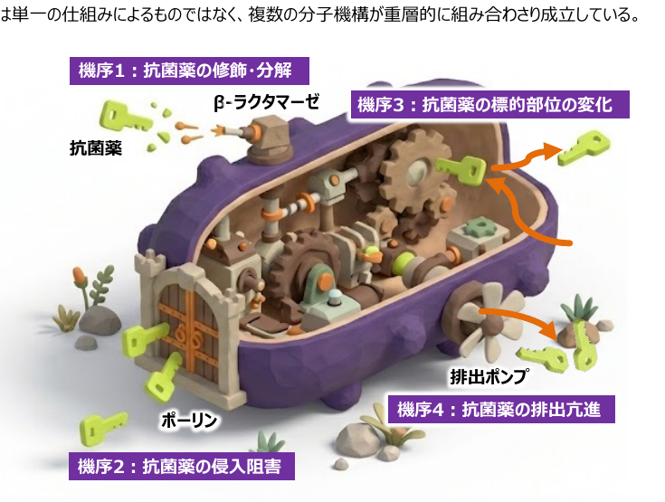
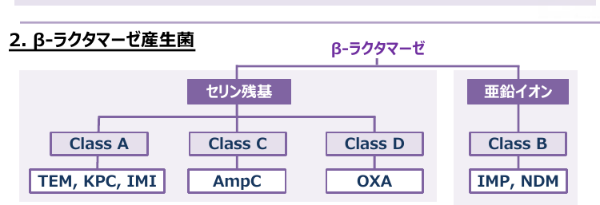

ID×ICU カンファレンス
感染症 / 抗菌薬各論
耐性GNRと新規抗菌薬 — 板書ノート
耐性機序 ／ β-ラクタマーゼ分類 ／ S. maltophilia ／ 耐性緑膿菌 ／ 新規βラクタム各論
レジュメ作成：ICU 関谷，森先生
| GNR | Gram-Negative Rod — グラム陰性桿菌 |
| PBP | Penicillin-Binding Protein — ペニシリン結合蛋白 |
| ESBL | Extended-Spectrum β-Lactamase — 基質特異性拡張型β-ラクタマーゼ |
| AmpC | AmpC β-Lactamase（Class C）— 誘導型産生が問題 |
| MBL | Metallo-β-Lactamase — メタロβ-ラクタマーゼ（Class B、亜鉛依存） |
| CRE | Carbapenem-Resistant Enterobacteriaceae — カルバペネム耐性腸内細菌 |
| CPE | Carbapenemase-Producing Enterobacteriaceae — カルバペネマーゼ産生腸内細菌 |
| MDRP | Multidrug-Resistant Pseudomonas aeruginosa — 多剤耐性緑膿菌 |
| CRPA | Carbapenem-Resistant P. aeruginosa — カルバペネム耐性緑膿菌 |
| DTRP | Difficult-to-Treat Resistance P. aeruginosa — 難治耐性緑膿菌 |
| CRAB | Carbapenem-Resistant Acinetobacter baumannii |
| CTLZ/TAZ | Ceftolozane/Tazobactam — セフトロザン/タゾバクタム（ザバクサ®） |
| CAZ/AVI | Ceftazidime/Avibactam — セフタジジム/アビバクタム（ザビセフタ®） |
| CFDC | Cefiderocol — セフィデロコル（フェトロージャ®） |
| TGC | Tigecycline — チゲサイクリン（タイガシル®） |
| CL | Colistin — コリスチン（オルドレブ®） |
| AZT | Aztreonam — アズトレオナム（アザクタム®）、モノバクタム系 |
| MNZ | Metronidazole — メトロニダゾール（嫌気性菌カバー） |
| ST合剤 | Sulfamethoxazole-Trimethoprim — ST合剤（バクトリム®） |
| PDC | Pseudomonas-derived Cephalosporinase — 緑膿菌由来セファロスポリナーゼ（AmpC型） |
| CrCl | Creatinine Clearance — クレアチニンクリアランス（mL/分） |
ICUにおいて遭遇する多剤耐性菌の中心は Gram 陰性桿菌である。Gram 陰性桿菌の耐性は単一の仕組みによるものではなく、複数の分子機構が重層的に組み合わさり成立している。

| 1修飾・分解 | β-ラクタマーゼ産生。ペリプラズムでβ-ラクタム環を加水分解して不活化。ESBL・KPC・MBL などの酵素が代表例。 |
| 2侵入阻害 | ポーリン蛋白の欠失・変化。外膜の透過性が下がり細胞内濃度が保たれない。緑膿菌（OprD消失）・腸内細菌に多い。 |
| 3標的部位の変化 | PBP変異。β-ラクタムが結合すべき標的酵素の形が変化し、薬剤が結合できなくなる。 |
| 4排出亢進 | エフラックスポンプ過剰発現。侵入した抗菌薬を能動的に細胞外へ排出。緑膿菌（MexAB-OprM）・腸内細菌（AcrAB-TolC）が代表。 |
β-ラクタマーゼはβ-ラクタム環を加水分解して抗菌薬を不活化させる酵素の総称。Ambler 分類はアミノ酸配列に基づく分子分類で、Class A〜D に分類される。Class B のみ活性中心に亜鉛（金属）を持つ「メタロβ-ラクタマーゼ（MBL）」で、モノバクタム系を含む幅広い抗菌薬を加水分解する。

MBL（Class B）の特徴：モノバクタム系（AZT）は MBL では分解されない。ただし MBL 産生菌の多くは同時に ESBL などのセリン β-ラクタマーゼも産生するため、AZT 単剤では不十分 → CAZ/AVI との併用が必要。
多くの腸内細菌科や非発酵グラム陰性菌が基底レベルで産生するβラクタマーゼ（Class C）。ペニシリン系・第3世代までのセファロスポリンを分解し耐性を示す。クラブラン酸などの一般的なβ-ラクタマーゼ阻害薬やセファマイシン系（セフメタゾールなど）にも耐性を示す点が ESBL と異なる。
第3世代セファロスポリン等に曝されることで酵素の産生量が増加し、治療中に耐性化するリスクが高い。感受性があってもこれらの抗菌薬使用は避け、第4世代セファロスポリン（セフェピム）またはカルバペネム系で治療を行う。
大部分のペニシリン系・セファロスポリン系・さらにアズトレオナムまでを不活化可能な β-ラクタマーゼ（主に Class A）。大腸菌やクレブシエラなど腸内細菌目細菌で多く見られる。
重症例では従来カルバペネム系が選択されてきたが、セフトロザン/タゾバクタム・セフタジジム・アビバクタム・セフィデロコルなども活性を示し注目されている。
Carbapenem-Resistant Enterobacteriaceae
耐性化の機序を問わず、カルバペネム系抗菌薬に耐性を示す腸内細菌の総称。
※ カルバペネマーゼ非産生の機序（ポーリン変異+AmpC など）も含む
Carbapenemase-Producing Enterobacteriaceae
Ambler Class A・B・D に属するカルバペネマーゼ産生によりカルバペネムに耐性を示す腸内細菌。
※ カルバペネマーゼを産生していても MIC ≤ 2 なら CRE 基準未満の場合あり
多剤耐性を示すブドウ糖非発酵グラム陰性桿菌。ICU患者・好中球減少を伴う免疫不全患者で VAP（後者では大葉性肺炎も）・CRBSI・菌血症を生じる。
セリン・メタロ両者のβ-ラクタマーゼ産生、アミノグリコシド修飾酵素、キノロン系感受性低下、複数の排出ポンプ発現など複数の耐性機序が複合し多様な抗菌薬に耐性を示す。
|
ST合剤
Trimethoprim-Sulfamethoxazole
第一選択。腎機能障害・骨髄抑制がない場合に優先。
|
レボフロキサシン
Levofloxacin
腎機能障害・骨髄抑制を有する場合に使用。
|
|
セフィデロコル
Cefiderocol
ST合剤・キノロン系の既使用例・耐性例で選択。
|
ミノサイクリン
Minocycline
上記3剤いずれかとの2剤併用として組み込む。
|
AZT はメタロβラクタマーゼでは分解されない一方、単体ではセリンβラクタマーゼにより分解されてしまう。CAZ/AVI によるセリンβラクタマーゼ阻害を追加することで両機序を同時に回避可能。
当院での①の使用例：
血液悪性腫瘍・好中球減少患者では予防的にレボフロキサシン・ST合剤が投与されていることが多く、初期治療時点で既に曝露歴を持つ場合、セフィデロコルを早期に使用する機会が増加している。
緑膿菌も染色体上の AmpC 型β-ラクタマーゼ（PDC）・ポーリン変異・排出ポンプの過剰発現・プラスミドを介したカルバペネマーゼ遺伝子獲得など、複数の機序が組み合わさり高度な薬剤耐性が形成される。
以下の8系統の抗菌薬のうち、3系統以上の薬剤に耐性を示すもの：
| ① 抗緑膿菌用ペニシリン系 | ピペラシリン、PIPC/TAZ など |
| ② 抗緑膿菌用セファロスポリン系 | セフタジジム、セフェピム |
| ③ 抗緑膿菌用カルバペネム系 | イミペネム、メロペネム |
| ④ モノバクタム系 | アズトレオナム |
| ⑤ 抗緑膿菌用フルオロキノロン系 | シプロフロキサシン、レボフロキサシン |
| ⑥ アミノグリコシド系 | アミカシン |
| ⑦ ホスホマイシン | — |
| ⑧ ポリペプチド系 | コリスチン |
カルバペネム系に耐性を示すもの。ピペラシリン・タゾバクタム、セフェピム、セフタジジム、アズトレオナムなど感受性のある従来のβ-ラクタム系抗菌薬を優先して使用する。
第1選択薬である全てのβ-ラクタム系およびフルオロキノロン系に耐性を示すもの。
推奨：CTLZ/TAZ / CAZ/AVI / イミペネム・レレバクタム / CFDC
| 薬剤 | ESBL | AmpC | Class A CPE |
MBL | DTRP | CRAB | S. malt. |
|---|---|---|---|---|---|---|---|
|
CTLZ/TAZ ザバクサ® |
○ | △〜○ | ✕ | ✕ | ◎ | ✕ | ✕ |
|
CAZ/AVI ザビセフタ® |
○ | ○ | ○ | ✕ | △〜○ | ✕ | ✕ |
|
CFDC フェトロージャ® |
○ | ○ | △〜○ | ◎ | ○ | △〜○ | ○ |
|
TGC タイガシル® |
○ | ○ | ○ | ○ | ✕ | △〜○ | ○ |
|
CL オルドレブ® |
○ | ○ | ○ | ○ | ○ | △〜○ | ○ |
|
AZT アザクタム® |
○ | ○ | ✕ | ○ | ○ | ✕ | ✕ |
|
CAZ/AVI + AZT ザビセフタ® + アザクタム® |
○ | ○ | ○ | ○ | △〜○ | △〜○ | ○ |
◎ 優れた活性 ／ ○ 有効 ／ △〜○ 感受性要確認 ／ ✕ 無効（または活性なし）
CPE: カルバペネマーゼ産生腸内細菌目細菌 ／ MBL: メタロβ-ラクタマーゼ ／ DTRP: 難治耐性緑膿菌 ／ CRAB: カルバペネム耐性 Acinetobacter baumannii
疾患毎の投与量
| 適応疾患 | 投与量・投与間隔 | 特記事項 |
|---|---|---|
| HAP/VAP | 3 g を8時間ごと | — |
| DTRP による重症感染症 | 3 g を8時間ごと | 適応外使用（Off-label） |
| 複雑性尿路感染症 | 1.5 g を8時間ごと （耐性菌は 3 g） | — |
| 腹腔内感染症 | 1.5 g を8時間ごと （耐性菌は 3 g） | メトロニダゾールと併用 |
腎機能による用量調整
| CrCl（mL/分） | 通常量「1.5 g/8時間ごと」 | 通常量「3 g/8時間ごと」 |
|---|---|---|
| >50〜130 | 1.5 g を8時間ごと | 3 g を8時間ごと |
| 30〜50 | 750 mg を8時間ごと | 1.5 g を8時間ごと |
| 15〜29 | 375 mg を8時間ごと | 750 mg を8時間ごと |
| <15（透析なし） | 推奨用量なし（未検討） | |
| 間欠的血液透析 | 初回 750 mg その後 150 mg を8時間ごと | 初回 2.25 g その後 450 mg を8時間ごと |
疾患毎の投与量
| 適応疾患 | 投与量・投与間隔 | 備考 |
|---|---|---|
| 血流感染症 / HAP/VAP / 尿路感染症 | 2.5 g を8時間ごと （2時間かけて投与） | 重症例では3時間投与 |
| 腹腔内感染症 | 2.5 g を8時間ごと | メトロニダゾールと併用 |
| MBL / 多剤耐性 S. maltophilia | 2.5 g を8時間ごと | AZT と併用（可能な限り同時投与） |
腎機能による用量調整
| CrCl（mL/分） | 投与量 |
|---|---|
| >50 | 2.5 g を8時間ごと |
| 31〜50 | 1.25 g を8時間ごと |
| 16〜30 | 0.94 g を12時間ごと |
| 6〜15 | 0.94 g を24時間ごと |
| 間欠的血液透析 | 透析後に 0.94 g 投与 |
疾患毎の投与量
| 適応疾患 | 投与量・投与間隔 | 特記事項 |
|---|---|---|
| HAP/VAP / 尿路感染症 | 2 g を8時間ごと | — |
腎機能による用量調整
| CrCl（mL/分） | 投与量 |
|---|---|
| ≥120（腎クリアランス亢進：ARC） | 2 g を6時間ごと |
| 60〜<120 | 2 g を8時間ごと（通常用量） |
| 30〜<60 | 1.5 g を8時間ごと |
| 15〜<30 | 1 g を8時間ごと |
| <15（透析なし） | 750 mg を12時間ごと |
| 間欠的血液透析 | 750 mg を12時間ごと 透析日は透析終了直後に投与 |
出典：ICU コアカンファレンス レジュメ「POINT 7. 感染症 <多剤耐性菌と新規βラクタム・βラクタマーゼ阻害薬>」
参考文献：Rottier WC et al. Clin Infect Dis. 2015;60(11):1622–1630
本資料は教育目的で作成したサマリーです。実際の治療方針の決定には必ず原典・最新のガイドラインを参照してください。
制作：ICU 関谷，森先生